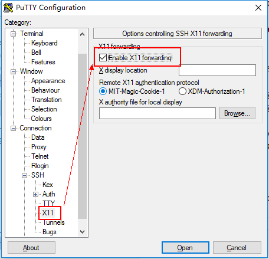
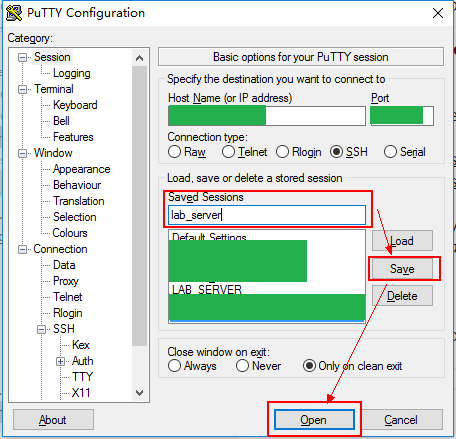

Apply for account
Firstly, ask the administrator for a user account, including the host and port information of the VPS.
Prerequisites
Before getting started, make sure that newer stable versions of the softwares listed below have been installed(depend on the OS of your desktop):
- Windows
- MacOS
- Linux
Get started
Windows
Run Xming from start menu, then start Putty.

set Host Name (or IP address) and Port, then expand the sub-menu SSH in Category pane.

Go to X11 sub-menu, and check the Enable X11 forwarding option.

Go back to Session menu, set a name of the configured host(lab_server for example)，then click Save. Next time you start Putty, the configuration will be in the Saved Sessions list.
Choose the session you just saved, and click Open, a command line interface will prompt you to input the username and password of your account.

input your username and password, then hit ENTER to login, the terminal interface is here.
you can test the X11 forwarding by running some applications with graphical interface, for instance
display

Note: display is a member program of ImageMagick, which can be used to display image on X server.
MacOS
Start XQuartz from Launchpad, then open built-in terminal of OS X, input
ssh -Y -p [port] [username]@[hostname]
to connect to the server.
Linux
Common Linux disitributions(Ubuntu, Fedora) with Desktop Environment have X11 server installed already, so open terminal directly and input
ssh -Y -p [port] [username]@[hostname]
to connect to the server.